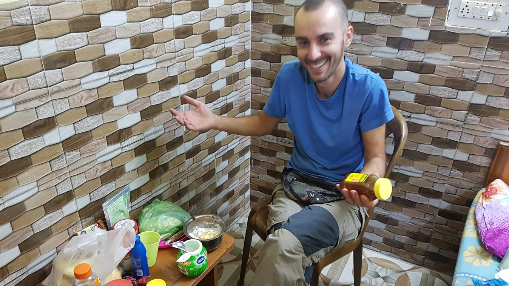
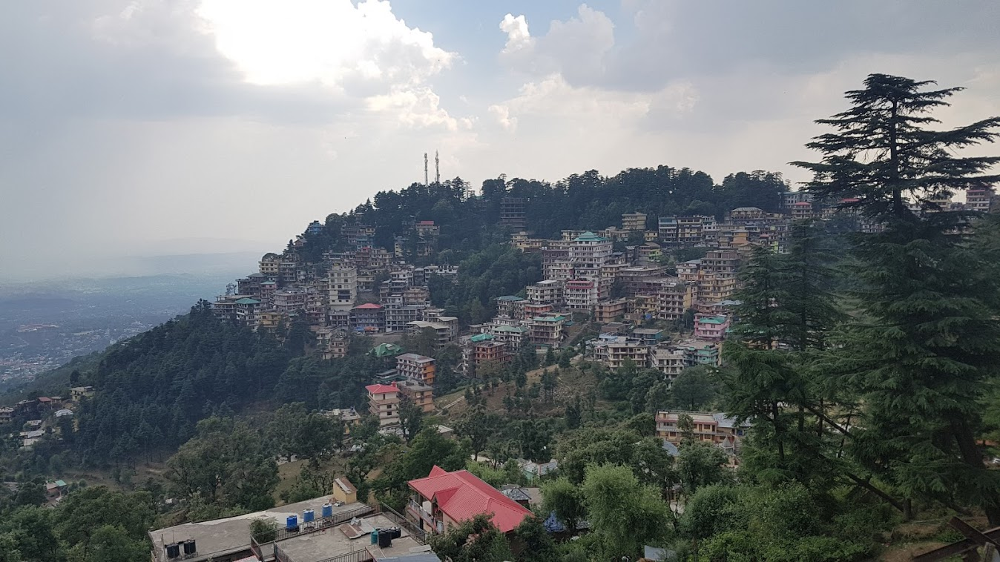

진짜 여행자의 삶을 사는 사람을 만나다.
2017년 05월 14일
여행 D+41, 인도 D+12, 맥그로드간즈 D+1

맥그로드간즈 도착
엉덩이가 자꾸 앞으로 밀려서 불편했던 버스. 어느새 눈을 떠보니 다람살라에 도착했다고 떠든다. 시간은 새벽 4시30분. 옆에 앉아있던 가이에게 우리 도착한거냐고 물어봤다. 결국 이 버스는 맥그로드 간지까지 가는 버스로 밝혀졌다. 나는 처음에 다람살라까지만 가는줄 알고 다람살라에 내려서 어떻게 맥그로드 간지까지 갈지 고민하고 있었는데 말이다.
한 30분은 더 가서 버스는 맥그로드 간지에 도착했다. 짐을 찾고 가방을 메는도중 버스 옆자리에 앉았던 가이가 같이 룸쉐어를 하지 않겠냐고 물어본다. 룸쉐어를 하면 비용이 절반으로 줄어들기 때문에 금전적으로 무척 유리하다. 나는 별 생각없이 좋다고 했다. 그렇게 우리는 버스 정류장을 넘어 거리로 나갔다.
많은 사람들이 빈방을 구하기 어려울거라고 한다. 방이 모두 꽉 찾다고 한다. 왜그런지는 모르겠다. 달라이 라마가 있어서 그런가? 수많은 여행자들이 머무는 곳이라서 그런걸까? 메인 거리에서 맥간을 떠나는 트래커를 발견했다. 그는 Tibet world라는 호스텔에서 묶었다고 한다. 하루에 500루피이고 좋은 숙소라고 한다. 그래서 우리는 빈자리가 생긴것으로 생각하고 그곳으로 갔다. 너무 이른 시간이었기 때문에 리셉션에는 아무도 없었고 기다리는 수 밖에 없었다. 어떤 인도인 가족도 기다리고 있었는데 부킹닷컴에서 이미 예약을 하고 왔다고 한다. 아무리 생각해도 여긴 자리가 없을것 같아서, 우리는 아무데나 부킹닷컴으로 예약하고 가기로 했다. 그전에 이곳에서 조금 잠을 청하기로 했다. 잠자기 최적의 로비였다. 약 한시간가량을 잤던것 같다.
진짜 여행자의 삶을 사는 사람을 만나다.
이 친구 이름은 Raz 루마니아인이다. 어제 버스에서봐도 한눈에 엄청나게 에너지가 넘치는 친구라는 사실을 알게 되었다. 지나가는 사람들에게 서슴없이 인사하고 대화한다. 뭔가 정말 독특한 친구같았다. 아무래도 이친구랑 맥간에서 동행하게 될것 같다. 우리는 방에들어가 짐을 풀었다. 숙소 이름은 잘 모르겠다. 그냥 오늘만 이곳에서 묶고 더 좋은 호스텔을 찾으러 갈 것이다. 짐만 풀은뒤 아침 식사를 하러 갔다.
역시 이곳에서도 아침 7시에 문을 연 가게를 찾기 어려웠다. 그렇게 한 가게를 찾아서 들어갔다. 치킨버거를 시켰고 그 라즈는 본인이 오트밀과 요거트로 아침을 만들어 먹는다며 먹지 않기로 했다. 식사를 하며 이친구와 본격적인 대화가 시작되었다. 나의 여행 계획 특히 이란에 가려다 포기했다고 말했는데 본인의 엄청났던 이란 여행 경험담도 들려줬다. 처음에 실없이만 보이던 이친구는 진정 내가 원하던 여행자의 삶을 살고 있었다. 짧은 시간동안 엄청난 것들을 배웠는데 다 기억에 담을 수 있을지 모르겠다.
내가 9개월 여행중이고 이제 1개월 지났다고 하니 몇가지 여행에 대해 조언을 해줬다. 두가지를 반드시 기억하라고 한다. 첫번째는 할수 있는한 계획을 최소화 하는 것. 두번째는 여행자와 사랑에 빠지는것. 특히 읽은대로 따라서 여행하지 말것을 강조했다. 유명한 관광지 찍기 여행을 하지 말라는 것이다. 그렇게 되면 본인 스스로 얻을 수 있는 여행의 경험을 조금 밖에 얻지 못한다. 여행이 끝나고 사람들에게 나는 여기여기 다녀왔다고 떠들수는 있지만 그것은 본인이 직접 경험한 여행이 아니라, 가이드에 나와있는대로 남들이 경험한 코스대로 편하고 안전한 장소만 들렸다가 나오는것이다. 그런 여행은 여행을 마친뒤에도 무언가 배고픔이 느껴질것이라고 한다. 나는 소름이 돋았다. 그동안 짧은 기간이었지만 내가 느꼈던 여행의 불편함의 원인이 이것에 있었다는 것을 깨달았기 때문이다.
포카라에서도 그랬고 마날리에서도 느꼈다. 나는 남들이 다들 가는 장소 남들 다하는 액티비티, 나도 그것들을 해야하는지 그냥 무기력하게 그런것들을 따라서 하려고 했던것 같다. 내가 진짜 원하는 나만의 여행을 하지 못하고 남들이 햇던 경험들을 그냥 따라했던 것이다. 온전히 내경험이 아닌 남들이 했던 경험이었다. 나는 유명한 코스와 내가 진짜 원하는 여행의 경계에서 혼란스러워 하며 어느 한쪽도 제대로 선택하지 못했던 것이다. 그것이 나를 새로운 경험속으로 뛰어들지 않고 그냥 까페랑 호스텔 안에 머물게 하거나 그냥 검색했던 유명한 장소만 따라다니게 했던 것같다. 순전히 내가 원하는것을 하지 못하고 억지로 타인이 원하는대로 행동할때 엄청난 무기력감이 느껴진다. 나는 30년 평생을 타인이 원하는 사회가 원하는 삶을 쫒으며 그렇게 무기력하게 살아왔었다. 그게 싫어서 여행을 떠난것이었다. 그런데 여행에 와서도 나는 똑같은 삶을 살고 있었던 것이다.
솔직히 마날리에서 최대한 부지런히 돌아다니려고 했고 이것저것 많이 했다. 그렇지만 그것들은 모두 남들이 가이드했던 경험들 이었다. 지나고 보기 그런것들이 생각보다 별로 기억에 남지 않는다. 남들이 좋다고 하는 래프팅도 했고 폭포속으로 들어가는 캐년닝도 했다. Naggar라는 마을도 구경했고 거기서 박물관 미술관 도 구경했다. 각종 템플도 구경했다.
나는 마날리에서 무엇을 해야했을까? 나는 그 삼나무 숲에서 도시락하나를 싸들고 아침일찍 가서 반나절 시간을 보내고 왔어야 했다. 그것이 내가 마날리에서 진짜 하고싶었던 일이었다. 하지만 나는 인터넷에서 검색한 장소와 액티비티를 따라 하느라 내가 진짜 원하던 여행을 경험하지 못하고 온것이다. 그나마 매일 매 끼니마다 다른 레스토랑에 갔고 그 레스토랑에서 만난 주인들과 친해진것은 좋은 경험이었다. 6일 머물렀지만 지나다니며 그 가게 주인들과 인사했는데 훌륭한 경험이었다. 그렇다. 이게 진짜 내가 원하던 나만의 경험이다.
나도 미술관 템플엔 별로 관심이 없다 다른것 진짜 내가 여행에서 원하는것들을 해보자. 인터넷에서 검색한대로 가이드북에 나와있는 멋진장소만 찾아 다니지 말자.
이 라지라는 친구를 통해서, 내가 그동안 여행에서 불편함을 느꼈던것의 원인을 깨닫게 된것 같았다. 나는 한껏 고무되었다. 그동안 나는 익숙해지는것이 문제라고 떠들었는데 아니었다. 내가 틀렸다. 그것은 아주 작은 원인일 뿐이었다. 근본적인 원인은 다른것에 있었던 것이다. 항상 문제의 원인은 생각보다 복잡하고 얽혀있는데 나는 항상 답을 빨리 찾으려 했던것 같다. 답을 빨리 찾고 빨리 해결하기. 지난 30년동안의 삶의 냄새가 나는 행동이다.
라지는 지금 6개월째 인도여행을 하고 있다고 한다. 그 전에는 1년에 1달동안 휴가를 내고 여행을 했었는데 이번에 일을 그만두고 지난 삶의 모든것을 정리하고 나왔다고 한다. 남긴것은 가족과 친구 두명 뿐이라고 한다. 모든 관계와 삶을 정리하고 인도에 왔다고 한다. 그는 가이드북이 알려주는 대로 따라하는것은 그냥 컴퓨터가 명령어를 하나하나씩 수행하는것과 같다고 한다. 그는 본인이 정말 원하는대로 여행하고 있었다. 화낼때는 화내고 사랑할때는 사랑하고 가끔 미친짓도 한다. 원하는 장소를 본인이 직접 찾아낸다.
그는 여행중 만나는 모든 경험속에는 우주가 나에게 말 하려는 어떤 숨겨진 메시지가 있다고 한다. 그것을 발견하는 것이 여행의 참된 목적이라고 한다. 그리고 그런 경험들을 최대한 많이 한 여행이, 여정을 모두 마쳤을때 기억에 남고 만족스러운 여행이 된다고 한다. 여행의 모든 경험속에서 숨겨진 메시지를 찾는것 이것이 여행자의 삶을 사는 바람직한 자세인것 같다. 그리고 나는 남은 여행동안 그것을 발견하려고 노력할 것이다.
이 친구는 그동안 내가 만났던 여행자중에 최고 였다. 대화하면 대화할 수록 깊이가 있었고 배울점이 많았다. 나는 다음 30년의 삶은 지금까지와는 다른사람이 되고 싶다. 그것은 분명 여행자의 삶일것이다. 여행자의 삶은 지구상의 모든장소가 편한 집이 되는것이다. 찬물로 샤워도 하고 지저분한 이불속에서도 잘수 있고 각종 벌레도 두려워하지 않는것, 그렇지만 항상 새로운 환경속에서 살며, 컴포트 존을 쉽게 벗어날수있고, 여행이 내게 주는 숨겨진 메시지를 발견하고 그것으로 부터 아름다움을 경험하는것이 여행자의 삶이다.
오늘 이 친구에게 정말 많은 가르침을 받았다. 앞으로 여행자의 삶을 살기 위해 어떤 자세를 가져야 할지 한가지를 깨달은것 같다. 나는 이곳 맥그로드 간지에서 이친구와 좀더 함께 하려고 한다. 아직 더 배울것들이 남아있다. 오늘 이후로 그동안의 궤적과는 약간 다르게 내 여행 궤도가 수정될 것 같다. 새로운 여행을 시작하는 느낌이다. 식사르 마치고 Raz와 과일을 구매하러 돌아다니면서 모든 사물들이 약간 다르게 느껴지는것을 느꼈다. 어떤 과일 가계에 향초가 피워져 있었는데 그냥 평병한 향초였지만 이상하게 다르게 느껴졌다.
 우리 숙소에서 아침식사를 만들어먹고 있는 라즈. 6개월 여행 내내 이렇게 아침식사를 했다고 한다. 각종 견과류와 요구르트, 꿀과, 코코넛 밀크와 과일등을 이용해 매일 아침식사를 만들어먹는데 비용절약과 건강에 최고라고 한다. 나도 도전해볼까?!!
식사후 돌아와서 샤워를 한 뒤, 나는 일기 쓰고 라즈는 낮잠을 잤다. 그리고 밖으로 나와 본격적인 맥간 오리엔테이션 시작. 라즈는 마사지 수업을 받고 싶어해서 같이 돌아다녔다. 나도 급 관심이 생겨서 마사지 받는 가격 조사해보기만 했다. 한번 받아볼 필요가 있음을 느꼈다. 내 무릎 통증 때문이다. 나는 주로 방가격을 알아보러 돌아다녔다. 둘이 조사하는 방향이 달라서 각자 오리엔테이션을 갖기로 했다.
먼저 점심식사를 하러 가는 길에 어디서 많이 본 두명을 만났다. 바라나시 첫날에 레스토랑에서 만났던 친구들이다. 여기서 만날줄은 꿈에도 몰랐는데 신기하고 반가웠다. 이 친구들이 화요일날 Truind 트레킹을 같이 하자고 하자고 했다. 처음에는 라즈와 동행할것으로 생각해서 망설여졌는데 이 친구들도 나처럼 1박2일로 한다고 하니 같이 동행하기로 했다.
점심식사를 하러 피스카페에 들어갔다. 이곳은 한국인+티베탄 부부가 운영하는 레스토랑인데 이곳의 맛집중 하나다. 어차피 한번은 가봐야하기 때문에 망설일 필요없이 들어갔다. 그런데 또 반가운 얼굴이 있었다. 바라나시에서 같은 옴 게스트하우스에 머물렀던 친구였다. 바라나시에서 만났던 사람을 여기서 또 만나다니 무척 신기했다. 이 친구가 화요일날 Triund 트레킹 1박2일을 하려고 하는데 같이 동행하면 어떻겠냐고 한다. 그래서 아까 같이 동행하기로 한 친구 두명이 더 있다고 다같이 가자고 했다. 그래서 결국 채팅방에 초대되었는데 결국 아까 다시 만난 두 친구와 이 친구가 원래 같이 동행하기로 했던것으로 밝혀져서 겁나 웃겼다. 세상 이렇게 좁을 줄이야! 식사를 하다가 한 한국인 친구가 또 합석하게 되었는데 이친구도 화요일에 같이 트레킹을 하기로 한 친구였다.
우리 테이블에는 킨들로 책을 읽고 있던 오스트렐리아인도 있었다. 그 친구에게 지금 우리 세명은 원래 알던 친구가 아니라 막 여기서 지금 만난것이다라고 했더니 무척 놀라고 부러워 했다. 같은 나라 사람을 이렇게 쉽게 만난다는게 부러웠나보다. 본인은 여행중에 오스트렐리아 사람을 한명도 보지 못했다고 한다. 여행을 다니다 보면 확실히 유독 한국인들 끼리는 서로 잘 어울리게 되고 동행하게 되는것 같다. 특히 요즘은 카톡 오픈채팅방을 통해 한국인 동행을 정말 쉽게 구할 수 있다. 카톡으로 동행을 구하는것. 이건 진짜 장단점이 크다. 쉽고 안전한 여행을 할 수 있는 반면, 우연이 만드는 새로운 만남을 기대하기 어렵다. 내생각에는 후자는 여행이 갖는 참된 즐거움인것 같다. 적어도 내가 원해서 카톡으로 동행을 찾아다니는일은 하지 않으려고 한다. 뭔가 인위적인 느낌이 들고 굳이 그렇게 구하지 않아도 가는길에 동행을 만나게 된다.
식사를 마치고 티베탄 박물관에 같이 구경갔다. 미리 친해지기도 할겸. 그런데 아까 돌아다니다가 봤던 티벳 히스토리 영화가 곧 시작하기 전이었다. 아까 안그래도 이거나 가볼까 했었는데 무척 잘된 일이었다. 근데 영화보다가 영어 알아듣기도 힘들고 지루해서 나옴. 나는 먼저 밖으로 나왔다. 그리고 이 친구들과 떨어져서 내 갈길을 가기로 했다. 한국인들끼리 너무 많이 어울리면 진짜 여행의 참모습을 발견하기 어려울것 같다.
여행하면서 다른 여행자들의 신기하기도 하고 부럽기도 했던것중 하나는 맨발로 다니는 것이다. 나는 엄청 깔끔을 떠는편이라 절대로 그렇게 하지 못한다. 심지어 맨발로 샌달을 신지도 못한다. 발가락 사이, 맨발과 샌들사이에 이물질이 들어가는 느낌이 너무 싫어서다. 특히 인도 바닥은 그리 청결하지 못하기 때문에 더욱 그렇다. 하지만 오늘 라즈에게 어떤 가르침을 받은 뒤 나는 조금더 다른 사람이 되기로 마음먹었다. 그래서 오늘부터 양말+방수 등산화가 아닌, 맨발 + 크록스인 상태로 돌아다니기로 했다. 따지고 보면 우리 신체의 피부는 완전 방수이기 때문에 하루를 마무리할때 깨끗하게 씻기만 하면 문제 없는것 아닌가?
라즈의 가르침으로 최대한 가이드북이나 사람들이 좋다고 한 식당이나 장소를 찾아가지 않고 내가 직접 돌아다니며 찾아다녔다. 비가 와서 다들 건물안으로 들어갔지만, 나는 자켓을 입고 바지를 걷고 돌아다녔다. 나는 비맞으며 돌아다니는것이 좋다. Enjoy water.
먼저 저렴한 호스텔을 찾았다. 가격이 250루피 (우리돈 약 5000원) 이다. 라즈와 공유하면 한명당 125(약 2500원)씩 지낼 수 있다! 좁지만 방 상태도 나쁘지 않고 화장실이 밖에 있었지만 상관 없었다. 만약 내가 돈이 많은 여행자라도 하더라도, 이런 저렴한 방에서 묶을 수 있다면 굳이 더 비싼 호스텔로 갈 이유가 없다. 바로 라즈에게 알렸더니 매우 기뻐한다. 사진을 보내줬더니 별5개짜리 호텔 같다고 한다. 라즈는 뭔가 좋은것에는 말끝마다 "super super" 거리는데 말투가 겁나 웃기다. 나도 약간 전염됨. (이게 밈인가?)
만족스러웠던 방탐사를 마치고 까페에 들어가서 책을 읽거나 일기를 쓰기로 했다. 반대편 골목으로 나와서 내려가는 길이 너무 예뻣다. 그러다가 그 길가에 까페가 하나 있었는데 나는 무심결에 구글맵에 등록된 식당인지 찾았지만 없었다. 그래서 고민했지만 남들이 좋다고 한 장소만 찾지 않기로 하지 않았나. 지나가는 길에 만난 이 까페가 그냥 마음에 들었기 때문에 가이드북이 원하는 장소가 아닌 내 마음이 원하는 장소로 들어갔다. 들어가서 음료를 먹으며 일기를 썼다. 그러다가 다른 사람들이 시켜먹는 식사를 봤는데 너무 맛있어보여서 나도 여기서 먹고 숙소로 가기로 했다. 이 집은 타이완 음식점이었다. 돼지고기 음식을 시켰는데 진짜 너무 맛있었다. 리뷰에 나온 맛집은 그냥 평균적으로 좋을 뿐이지 나한테 특화된 맛집은 아니다. 진짜 맛집을 찾으려면 내가 직접 돌아다니고 내가 진짜 맛있게 느끼는 식당을 찾아야한다는 것을 깨달았다. 리뷰만보고 찾아 다니지 않아도 충분히 맛집이 많다. 오늘 저녁 식사는 내게 큰 의미가 있었고 또한 무척 만족스러운 저녁식사였다.
저녁식사로 먹었던 돼지고기 음식, 비주얼과는 다르게 충격적으로 맛있어서 놀라웠다.
식사를 하면서 가게 주인과 종업원에게 너무 맛있다고 계속 칭찬을 했다. 그들도 기뻐했고, 나도 기뻤다. 이런게 행복이구나! 식당을 나왔다. 내려가는 길에 보이는 깊은 골짜기와 멀리보이는 곳곳에 작은 집과 마을들 그리고 점점 노란빛으로 물들어가는 하늘, 그것을 감싼 숲과 나무들이 아름답게 느껴졌다. 행복했다. 숙소쪽으로 돌아가는길 이런저런 가게를 구경하며 주인과 짧고 긴 대화를 했는데 이것 또한 행복했다. 망고 1kg을 구매했는데 1.2kg 나왔지만 아저씨가 1kg가격으로 줘서 또한 행복했다. 노을이 멋지게 지길래 길 따라 쭉 앉아있는 현지인들 틈에 앉아 노을을 감상했다. 이 곳에는 수 많은 현지인과 외국인여행자가 있었지만 이 속에서 무척 안전함을 느꼈다. 이 모든것들이 그 순간 나를 행복하게 했다. 아까 라즈가 내게 가르쳐준 것처럼. 매 순간순간 마다 우주가 이 여행을 통해 내게 하는 숨겨진 메시지에 귀를 귀울여야 한다. 그것을 느꼈을 때 아름다움과 경이로움 행복을 느끼게 되는것 같다. 이곳 맥그로드 간지가 너무 좋다. 내가 여행중이라는 사실이 새삼 나를 행복하게 했다.
오늘 마사지를 받는것으로 맥그로드 간지에서의 길고 길었던 첫날(오리엔테이션)을 마무리하기로 했다. 내 인생 첫 마사지다. 태어나서 한번도 받아본적이없다. 인디안 전통 마시지를 받았다. 가격은 600루피 였다. 생각보다 나쁘지는 않았다. 잘 안쓰거나 긴장하고 굳어있던 근육들을 마사지 받으니 그동안 여행의 피로가 풀리는 느낌이었다. 근데 엄청 아팠다. 곧 triund트레킹을 다녀올건데 마치고 다른 마사지 가게에서 한번더 받아봐야 겠다.
숙소에 돌아와 샤워를 마친 뒤 망고로 오늘 하루를 마무리했다. 행복하다.
 맥그로드 간즈의 모습. 언덕과 빽빽한 건물들, 티벳 승려들이 어우러진 곳.